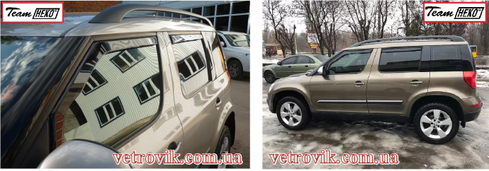

Ветровики – это не только стильный авто аксессуар, но и функциональный элемент обвеса авто. В зависимости от типа крепления можно купить вставные и накладные (клеящиеся) ветровики. Если Вы решили дополнить свой автомобиль новым тюнингом и остановились на ветровиках, перед Вами постает выбор, какие же взять? В данной статье мы расскажем о видах ветровиков, все об их пользе, преимуществах и производителях – о двух конкурирующих гигантах в отрасли автомобильных дефлекторов – ТМ «Team Heko» и ТМ «HIC».
Для чего же вообще нужны ветровики или дефлекторы окон?
- Прямое предназначение – отбивать потоки воздуха от боковых окон. Аэродинамическая форма ветровиков позволяет перенаправить воздушный поток от стекла, а с ним и влагу, грязь, пыль, снег или дождь, насекомых и прочее, что попадается на пути. Таким образом, дефлектор предотвращает быстрое загрязнение бокового стекла, что особенно важно с водительской стороны для качественного обзора в боковом зеркале заднего вида.
- Вторая функция ветровиков заключается в комфортной вентиляции салона. Даже при быстрой езде, есть возможность приоткрыть окна, наслаждаться свежим воздухом и забыть при этом за сквозняки. Ветровики также спасут от запотевания окон в проливной дождь, ведь пустив свежего воздуха в салон, конденсат устранится, при этом непогода снаружи не потревожит Вас.
- Ветровики отводят воду, которая во время осадков при включенных дворниках сбрасывается с лобового стекла в стороны, и препятствуют ее попаданию на боковые окна.
- Установить дефлекторы окон – это выход и для курящих водителя или пассажиров. Теперь порывы ветра не будут забрасывать пепел обратно в машину, и Вам не придется выбирать между свежим воздухом и чистотой салона.
- Затемненный цвет ветровиков обеспечивает дополнительную тень, и защиту от ультрафиолета.
- Современный дизайн дефлекторов придает автомобилю стиль, удачно подобранные ветровики украшают и подчеркивают силуэт машины.
Теперь разберемся в видах ветровиков:
В зависимости от способа установки ветровиков на автомобиль, существуют вставные ветровики (то есть те, которые вставляются в проем окна автомобильных дверей), накладные ветровики (клеятся над окном на рамку автомобильных дверей) и ветровики на крепежах (на зажимных клипсах, но этот вариант дефлекторов исключительно для фур и другого габаритного транспорта). Лидером по производству качественных вставных ветровиков в Европе является польская компания «Team HEKO». За 30 лет специализации по работе с пластмассами и органическим стеклом, их изделия завоевали широкую популярность не только за рубежом, но и в Украине. Чем же заслужили такую любовь вставные ветровики HEKO? В первую очередь своим безоговорочным качеством исполнения.
Какие они, качественные ветровики? Это те, которые прочно держаться и долго сохраняют свой первоначальный вид.
Водители со стажем делятся своим опытом и утверждают, что вставные ветровики продержатся на окнах дольше, чем клеящиеся, и предпочитают именно Г-образные вставные дефлекторы на авто. Действительно, после появления на широком рынке накладных ветровиков, двухсторонний скотч на некачественных накладных ветровиках быстро снашивался, и приходилось клеить новый скотч. В то время как способ крепления вставных дефлекторов более надежен. И хотя за последние годы рынок на месте не стоял, производством профессионального двухстороннего скотча занялась канадская компания «3М», миф продолжает существовать и сейчас.
Как установить вставные ветровики на авто?
Чтобы прикрепить вставные дефлекторы не нужно иметь каких-то особых навыков. При установке ветровик немного выгинают и заводят в паз между уплотнительными резинками окна в места, куда заходит стекло, и в паз боковой планки. Пара передних вставных ветровиков держаться и не выпадают не только благодаря своей геометрической форме. Для более плотного прижатия используются специальные П-образные скобы, которые вставляются между уплотнительными резинками в нескольких местах. Пара передних и пара задних дефлекторов от ТМ HEKO дополнительно к скобам имеет несколько мест проклеенных двухсторонним скотчем. Таким образом ветровики прочно пристают, не имея шансов выпасть.
Что отличает вставные дефлекторы Тим Хеко от других производителей? И почему польские аксессуары на окна так полюбились в Украине?
- Стоит рассказать, что концерн «TeamHeko» состоит из двух огромных заводов г. Чермно и г. Освиецим, оба расширяются из года в год.
- Компания дважды прошла проверки и аудит, после чего работает по международному стандарту качества ISO 9001-2008, ISO 9001-2015.
- Обтекатели окон от Хеко имеют почти 2500 наименований для 139 марок авто и продолжают охватывать все мовые модели, расширяясь в ассортименте.
- Амбиции и преданность команды Хеко изначально выбранному вектору развития качества продукции завоевали мировое признание. Более 90 % производимых дефлекторов экспортируются в страны Европы, Китай, США, и другие, что подтверждает лидерство компании на мировом рынке.
- Торговая марка «TeamHeko» награждена сертификатом Польского Национально Института Гигиены, а также Сертификатом Деловой Репутации.
Как результат вставные дефлекторы производят из высокопрочного акрилового стекла, которое сохраняет стабильность свойств при перепадах температур от -50 до +80. Дымчатые ветровикиХеко устойчивы к ультрафиолету, и не меняют свой цвет и окрас, а также форму после палящего солнца каждого летнего сезона и морозов зимы. Изюминкой вставных ветровиковХеко есть их уникальный плоский дизайн, а зеркальный глянец поверхности ветровика украшает и классические, и даже самые современные автомобили. Однако большое количество современных машин оснащены автоподъемниками стекол, а также механизмом автоматического опущения стекла при обнаружении преграды в проеме окна. Данный защитный механизм в некоторых машинах именно так и расценивает вставные ветровики со скобами, на которые натыкается стекло, и срабатывает автоматический отсекатель его поднятия. В этом случае единственным выходом для таких «вредных» автомобилей будет установить накладные ветровики.